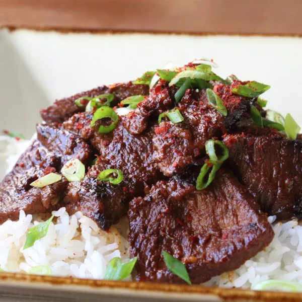

Bulgogi Beef

Korean Style BBQ
Literally speaking, bulgogi (불고기) means “fire meat”. It is often made with tender parts of beef, pork or chicken. However, in general terms, unless specified, bulgogi is made with beef.
Undoubtedly it is one of the most well-known Korean traditional foods and it has been around for thousands of years. Naturally, the cooking method of bulgogi evolved over time and it varies by region too.
Ingredients
- 1 ¼ pounds boneless beef short ribs, sliced across the grain in 1/8-inch thick slices
- 4 cloves garlic, finely crushed
- ¼ cup grated yellow onion
- 1 tablespoon freshly grated gingerroot
- 1 tablespoon toasted sesame oil
- 1 tablespoon light brown sugar, or to taste
- ⅓ cup freshly grated Asian pear
- ¼ cup soy sauce
- 1 tablespoon Korean red pepper flakes (gochugaru)
- ½ teaspoon kosher salt
- 1 tablespoon vegetable oil, plus more for brushing skillet
- 2 cups hot steamed rice, or as needed
- 2 sliced green onion tops for garnish
Instructions
- Mix garlic, grated onion, grated ginger, toasted sesame oil, and brown sugar together in a mixing bowl. Stir in grated pear, soy sauce, and red pepper flakes.
- Transfer meat to marinade and toss to coat on all sides. Cover and refrigerate, 1 to 2 hours.
- Season meat with salt and a drizzle of vegetable oil. Toss.
- Brush a cast iron skillet with a little vegetable oil and place over high heat. When the skillet is very hot, add beef in a single layer and cook until meat begins to caramelize around the edges and moisture begins to evaporate, 2 to 3 minutes per side. Serve over hot rice and top with green onion slices.